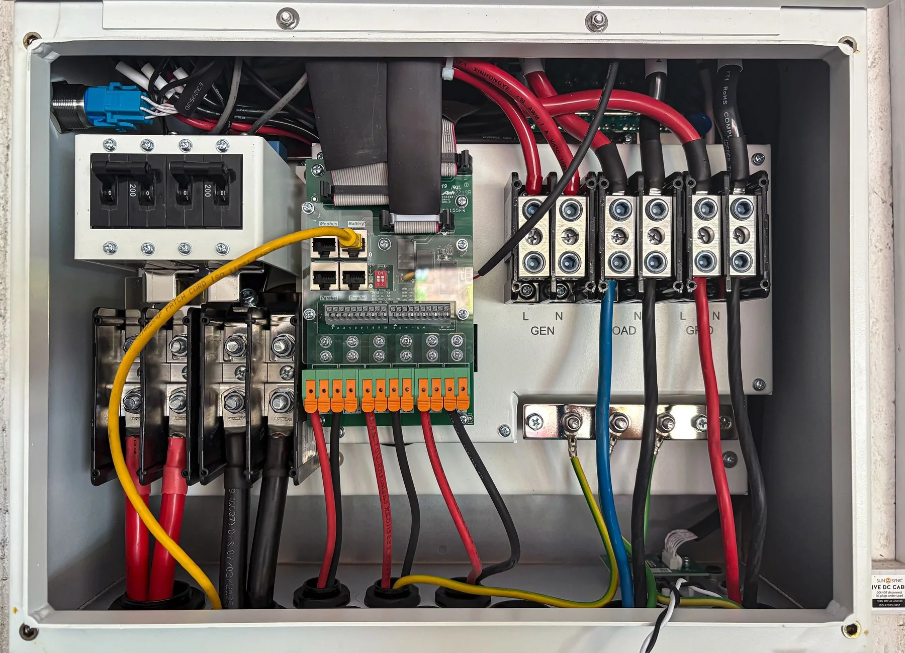

Le périmètre
Votre demande et les caractéristiques du lieu permettent de préparer la prestation avec le partenaire.
PARIS & PROCHE RÉGION · DÉPANNAGE ÉLECTRIQUE
Une coupure, un tableau qui déclenche ou un équipement en panne : décrivez les symptômes et votre adresse pour organiser une intervention adaptée.

INSTALLATIONS & ÉQUIPEMENTSUN BESOIN BIEN CADRÉ
Une coupure, un tableau qui déclenche ou un équipement en panne : décrivez les symptômes et votre adresse pour organiser une intervention adaptée.
Votre adresse et votre arrondissement
Les équipements concernés et le moment où la panne apparaît
Une photo du tableau si elle peut être prise sans toucher à l’installation
AVANT LE PREMIER GESTE
Votre demande et les caractéristiques du lieu permettent de préparer la prestation avec le partenaire.
Un prix applicable à votre situation et un devis pour les travaux éventuels : vous avez les éléments avant votre accord.
L’adresse, les accès et la disponibilité sont pris en compte pour confirmer un délai adapté.
LE DÉTAIL DES EXPERTISES
Des témoignages publiés sur les sites d’origine et sur Trustpilot. Les avis du réseau BAM couvrent plusieurs métiers.
LES RÉPONSES UTILES
VOTRE PROJET, NOTRE PROCHAINE ÉTAPE
Une urgence maintenant. Un projet pour demain. Un même interlocuteur.